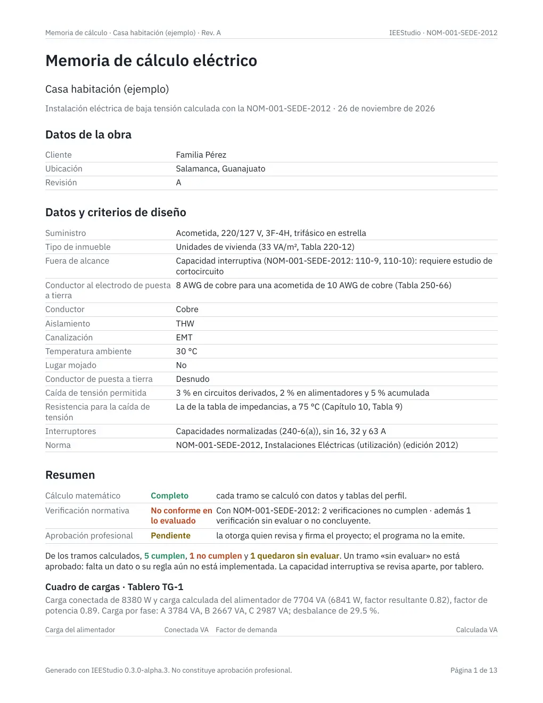
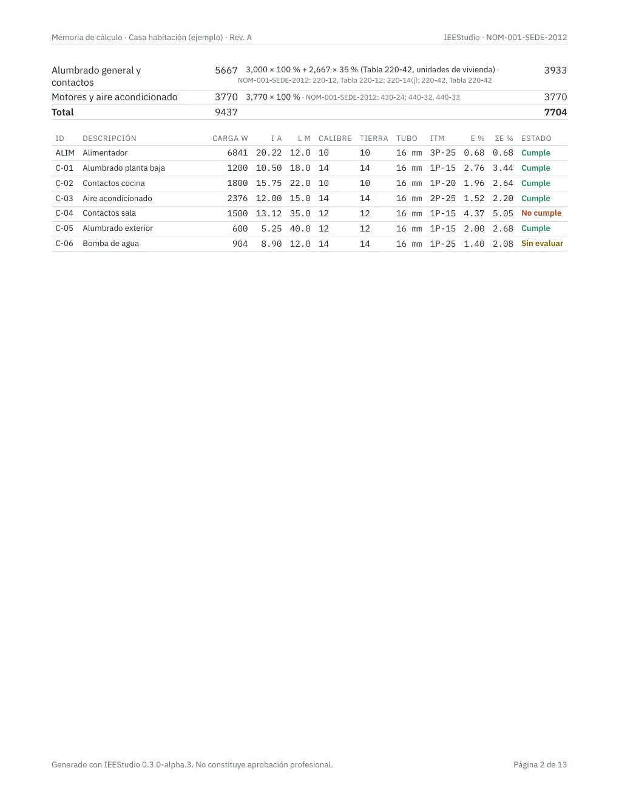
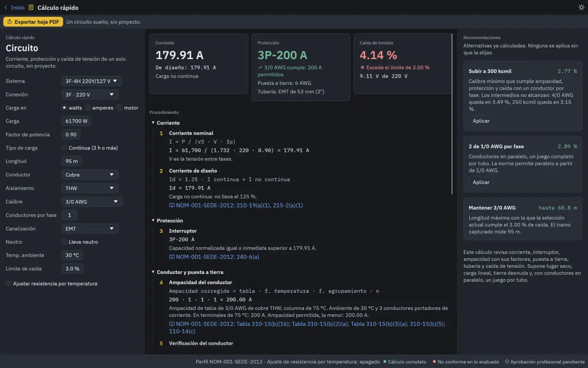

Herramientas
Nada sale de una caja negra.
Cada resultado trae su fórmula, los valores sustituidos y el artículo de la norma. Si algo no cumple te dice por qué y cómo corregirlo; si falta un dato, no lo inventa.
El procedimiento de cada circuito.
-
Corriente nominal
I = P / (V · fp)
I = 1,500 / (127 · 0.90) = 13.12 A
-
Caída de tensión
ΔV = 2 · I · L · (R · cos θ + X · sen θ) / n
ΔV = 2 · 13.12 · 0.0350 · (6.6 · 0.90 + 0.223 · 0.436) / 1 = 5.55 V
NOM-001-SEDE-2012: Capítulo 10, Tabla 9
-
Caída acumulada desde la fuente
e total = 0.68 + 4.37 = 5.05 %
5.05 % es mayor que el límite de 5.00 %.
NOM-001-SEDE-2012: 210-19(a)(1), nota 4; 215-2(a)(1), nota 2
La fórmula, los valores y el artículo
Cada circuito y alimentador muestra su procedimiento con los valores sustituidos y la tabla o artículo que lo respalda. Es lo mismo que va en la memoria.
Te dice qué criterio decidió
Si el calibre lo determinó la ampacidad, la protección o la caída de tensión, lo dice. Si algo no cumple, propone alternativas ya calculadas.
No redondea por ti
Calcula con precisión completa y solo redondea lo que se muestra. Puedes comprobar cualquier número a mano.
Se calculó con todos sus datos y pasó cada verificación.
C-01: caída de 2.76 % de 3.00 % permitido.
Al menos una verificación falla. Dice cuál y cómo corregirla.
C-04: caída acumulada de 5.05 % de 5.00 %.
Falta un dato o la norma no cubre el caso. Nunca supone un valor.
C-06: falta la corriente de placa del motor para el relevador de sobrecarga.
La aprobación es tuya. IEEStudio verifica contra la norma, pero nunca marca un proyecto como aprobado: esa firma la da el ingeniero responsable.
Del cuadro de cargas a la memoria.

Cuadro de cargas que se calcula solo
Cada circuito con su carga, corriente, calibre, tierra, tubería, interruptor y caída de tensión, y el alimentador con la carga del artículo 220. El filtro «Pendientes» deja solo lo que falta.
- Carga por fase y desbalance del tablero.
- Caída acumulada desde la fuente.

El unifilar se dibuja solo
Acometida, alimentadores, tableros y circuitos con su interruptor, conductores, tubería y caída de tensión. Cambia un dato y el diagrama se actualiza.
- Se exporta a DXF para seguir dibujando en AutoCAD.
- Va incluido en la memoria de cálculo.


La memoria, lista para revisar y firmar
Un PDF con los datos de la obra, los criterios de diseño, el cuadro de cargas, el diagrama unifilar, las observaciones y el procedimiento de cada tramo.
- Responsable, cédula y revisión en cada hoja.
- Espacio para firmas al final.

Un circuito, sin armar proyecto
El cálculo rápido te da corriente, interruptor, conductor, tierra, tubería y caída de tensión de un solo circuito, con su hoja en PDF. Si te sirve, lo agregas al proyecto con un clic.
Lo que calcula hoy.
Instalaciones de baja tensión conforme a la NOM-001-SEDE-2012. El programa está en desarrollo: lo que no aparece aquí todavía no lo calcula.
- Conductores
- Menor calibre por terminales, temperatura, agrupamiento, protección y caída de tensión. Conductores en paralelo, un juego por tubo, cuando hacen falta.
- Protecciones
- Interruptor normalizado inmediato superior a la corriente de diseño, o el que tú fijes, verificado contra el conductor.
- Caída de tensión
- Por impedancia con la Tabla 9, por tramo y acumulada desde la fuente, con la longitud máxima permitida.
- Carga del alimentador
- Artículo 220: alumbrado por área según el tipo de inmueble, contactos, aparatos fijos y cocina, con sus factores de demanda.
- Motores y clima
- Corrientes de las tablas 430-248 y 430-250, conductor al 125 %, interruptor, relevador de sobrecarga y el motor mayor en el alimentador.
- Transformadores
- Hasta 600 V: primario y secundario, protección de la Tabla 450-3(b) y tensión propia del tablero.
- Puesta a tierra
- Conductor de puesta a tierra de equipos (Tabla 250-122) y conductor al electrodo de la acometida (Tabla 250-66).
- Tubería conduit
- EMT, IMC, RMC y PVC: ocupación de 53, 31 y 40 %, niples al 60 % y verificación de atascamiento.
- Capacidad interruptiva
- Revisión por tablero con la falla estimada como cota superior, punto a punto desde la fuente. Se puede apagar; no es un estudio de cortocircuito.
- Balanceo de fases
- Reparte los circuitos de un tablero entre las fases para dejarlo lo más balanceado posible, y se puede deshacer.
- Cálculo rápido
- Un circuito sin armar proyecto, con su hoja en PDF y alternativas ya calculadas si no cumple.
- Excel y DXF
- El cuadro de cargas va y viene de Excel; el unifilar se exporta a DXF para AutoCAD.
Las tablas de la norma, en datos abiertos.
Las tablas que usa el programa están en archivos que cualquiera puede revisar, cotejadas contra una captura independiente. El código no tiene valores de la norma escritos a mano.
Míralo con el proyecto de ejemplo.
Abre la app con el ejemplo o empieza el tuyo desde cero.